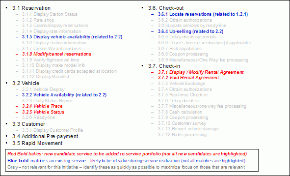
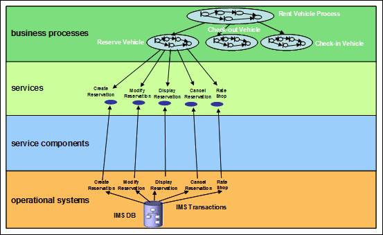

In the Rent-a-car example, the services from the existing system were identified with the help of analysis of the code
with an SME and the relevant documentation. No impact analysis tools were used, as the identification of various
transactions in the existing application was relatively straightforward. Each of these transactions was analyzed in
detail to identify the specific actions performed and the type of information exchanged. Transactions belonging to the
same transaction type were then mapped to the services which were described to perform similar capabilities. This
resulted in the identification of three types of services:
1. Services that were identified through Process Decomposition (Top-down Analysis) were also identified by the Existing
Asset Analysis (Bottom-up).
2. Services which were not identified through Process Decomposition (Top-down Analysis) were identified by the Existing
Asset Analysis (Bottom-up).
3. The Services which were not considered to meet current and anticipated future business needs were not considered to
be included in the Service Portfolio. Only those services that have distinct business value are considered for
componentization. Note: The functionality that is of business value will be considered for componentization and later
exposed as a service.
Figure 1 shows only a partial list of services that were identified by both Process Decomposition and Existing
Asset Analysis (in blue - 3.1.5, 3.2.2, 3.6.1, 3.6.4) and those that were identified only through Existing Asset
Analysis (in red – 3.1.8, 3.2.4, 3.2.5, 3.7.1, 3.7.2). Services identified should then be prioritized based on the
current and future business needs provided by the client. Only the high priority services should be considered for
componentization. Note: This prioritization has not been reflected in the example below.

Figure 1: Rent-a-car example –candidate services identified from
existing applications
Figure 2 shows the candidate services identified from functionality such as Create Reservation, Modify
Reservation, etc provided by existing applications. For now, it is assumed that the existing applications can deliver
the quality of service required for the services and the figure shows the implementation of services directly from
existing applications, bypassing the use of service components.

Figure 2: Rent-a-car existing functionality as services
|